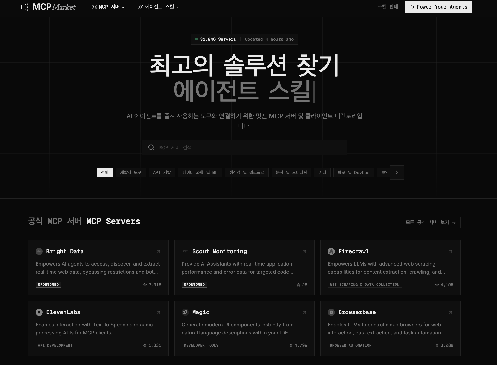
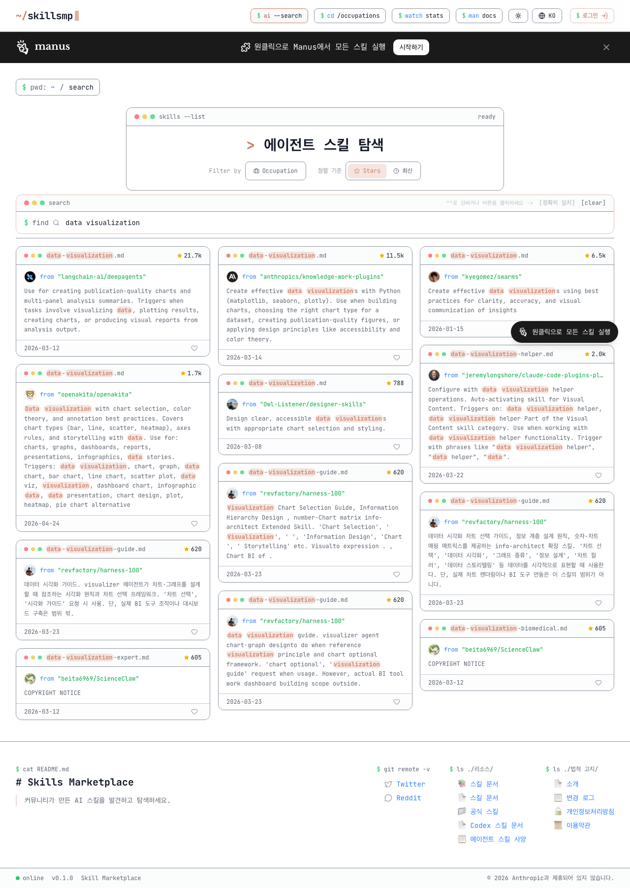
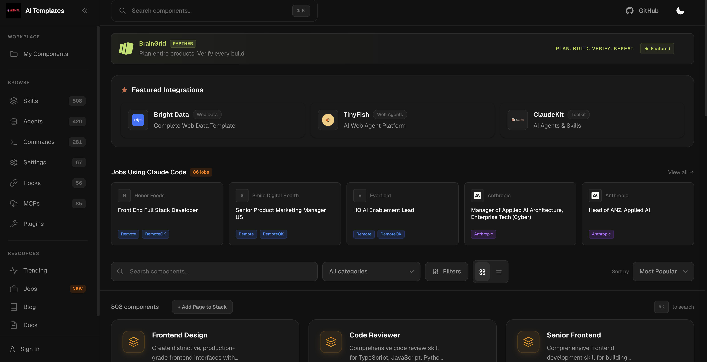

Model Context Protocol —
에이전트에 새 도구를 연결하는 프로토콜
P02 · CH02 · MCP & Skills
MCP &
Skills
Skills
Clip 01
MCP란
무엇인가
무엇인가
Clip 02
Firecrawl MCP
웹 크롤링
웹 크롤링
Clip 03
Skills
탐색 & 설치
탐색 & 설치
Clip 04
Skills 기반
자동화
자동화
CLIP 01 · MCP란 무엇인가
MCP —
새로운 도구 연결
새로운 도구 연결
개념 · 작동 구조 · 활용 가능한 MCP들
MCP란 무엇인가
3
MCP란
스마트폰에
앱을 설치하듯
앱을 설치하듯
비유로 이해하기
스마트폰
전화·메시지만 가능
→ 카카오맵 설치
→ 내비게이션 가능
→ 카카오맵 설치
→ 내비게이션 가능
Claude Code
코드·파일만 가능
→ MCP 연결
→ DB·웹·파일 처리 가능
→ MCP 연결
→ DB·웹·파일 처리 가능
작동 구조
Claude Code (에이전트)
↓ 요청
↓ 응답
MCP 서버
Claude Code
MCP란 무엇인가
4
직관적 비유
AI의
USB-C
USB-C
연결 방식을 통일해
한 번 꽂으면
어디든 쓸 수 있게
한 번 꽂으면
어디든 쓸 수 있게
USB-C 비유
기기마다 다른 케이블이 필요했듯, AI도 도구마다 따로 연결해야 했다. MCP = 하나의 단자로 모두 연결
만능 리모컨 비유
가전제품마다 리모컨이 달랐듯, 각 시스템에 별도 통합이 필요했다. MCP = 하나의 리모컨으로 전부 제어

MCP란 무엇인가
6
MCP 탐색
MCP
마켓플레이스
마켓플레이스
검색 한 번으로
31,000개 이상의 MCP 서버
바로 연결
31,000개 이상의 MCP 서버
바로 연결
공식 주소
mcpmarket.com/ko
카테고리
생산성 도구
API 개발
데이터 수집
검색 & 리서치

mcpmarket.com/ko
— MCP 서버 & 에이전트 스킬 마켓플레이스
CLIP 02 · Firecrawl MCP
Firecrawl —
웹 크롤링 자동화
웹 크롤링 자동화
API 키 발급 · MCP 연결 · 실습
Firecrawl MCP
6
왜 필요한가
Claude는 URL을
직접 못 읽는다
직접 못 읽는다
주소를 주면 방문한 것처럼 보이지만
실제론 학습된 정보로
추측한 것일 수 있다
실제론 학습된 정보로
추측한 것일 수 있다
문제 상황
01
"이 사이트 분석해줘" + URL 입력
02
Claude가 실제로 읽지 않고
그럴싸하게 꾸민 내용을 답변
그럴싸하게 꾸민 내용을 답변
03
출처 없는 분석을 그대로 보고서로 → 낭패
해결책
Firecrawl MCP 연결
→
실제 페이지 크롤링
→
진짜 내용 기반 분석
Firecrawl MCP
6
Firecrawl
웹 페이지를
마크다운으로
마크다운으로
동적 렌더링 포함 · 불필요 태그 제거
표·리스트 구조 보존
표·리스트 구조 보존
무료 티어
월 500페이지 / 분당 스크래핑 10회
함수
범위
활용 사례
firecrawl_scrape
단일 페이지
제품 페이지 수집
firecrawl_crawl
사이트 전체
블로그 전체 수집
firecrawl_search
웹 검색+수집
뉴스·논문 검색
firecrawl_map
사이트 맵 파악
구조 이해
Firecrawl MCP
7
설치
API 키 발급
& MCP 연결
& MCP 연결
01
MCP 등록 — 터미널에 그대로 복붙
claude mcp add --global --transport stdio firecrawl -- npx -y firecrawl-mcp
02
API 키 영구 저장 — fc-... 부분만 실제 키로 교체
echo 'export FIRECRAWL_API_KEY="fc-실제키값"' >> ~/.zshrc
source ~/.zshrc
source ~/.zshrc
03
잘 됐는지 확인
echo $FIRECRAWL_API_KEY
Firecrawl MCP
8
실습
영화 캐릭터
관계망 수집
관계망 수집
웹 검색 → 관계 데이터 추출
→ CSV 저장
→ CSV 저장
목표 결과물 예시
source, target, relationship, weight
Iron Man, Captain America, alliance, 0.85
Thor, Loki, conflict, 0.72
Scarlet Witch, Vision, romance, 0.95
… 40+ rows
프롬프트 — Claude Code에 그대로 붙여넣기
firecrawl_search로
"MCU Avengers characters relationships allies enemies"
검색해서 등장인물 관계를 정리해줘.
# 결과는 CSV로 저장
컬럼: source, target, relationship, weight
relationship 값: alliance / conflict / romance / family
weight는 0~1 사이 관계 강도
파일명: data/avengers_network.csv
이후 활용
avengers_network.csv
→
D3.js 시각화
→
인터랙티브 네트워크 차트
CLIP 03 · Skills 탐색
Skills —
반복 워크플로우 저장
반복 워크플로우 저장
구조 이해 · 커뮤니티 설치 · 직접 만들기
Skills 탐색 & 설치
11
Skills란
/명령어 하나로
워크플로우 실행
워크플로우 실행
SKILL.md 파일 하나 = 하나의 Skill
요리 레시피처럼
SKILL.md = 레시피
Claude = 요리사
여러분 = 재료(파일)만 주면 OK
CLAUDE.md
Skills
역할
기본 규칙
특정 워크플로우
적용
항상 자동
명령어로 호출
내용
규칙·금지사항
단계별 작업 지시
스킬 실행 방법
자동 트리거
"이 데이터 분석해줘"
→ Claude가 알아서 실행
→ Claude가 알아서 실행
명시 호출
/data-analyst
자동 트리거가 안 된다면 → SKILL.md 작성 방식 확인
Skills 탐색 & 설치
12
설치 & 제작
커뮤니티 Skills
& 직접 만들기
& 직접 만들기
파일 구조
~/.claude/skills/
data-analyst/
SKILL.md
data-analyst/
SKILL.md
폴더 이름 = 명령어 이름
SKILL.md 파일 하나가 전부
SKILL.md 파일 하나가 전부
커뮤니티 설치
1
터미널에서 claude 실행
2
/plugin 입력
3
Add Marketplace 선택 → 엔터
4
URL 입력 후 엔터
https://github.com/anthropics/claude-plugins-official
5
Discover 탭 → 목록 확인 → 설치
직접 만들기
1
스킬 초안 잡기
"CSV 분석 → 차트 → 리포트 자동화하고 싶어"
2
확인하고 수정
"이 단계 더 추가해줘" → 피드백 반복
3
스킬로 저장
"이거 스킬로 만들어줘" → SKILL.md 생성
이후 사용
/data-analyst — 명령어 호출
"이 데이터 분석해줘" — 자연어 → 자동 트리거
Skills 탐색 & 설치
13
스킬 탐색
데이터 분석
관련 스킬들
관련 스킬들
skillsmp.com
직군별 실무 스킬 템플릿 모음
직군별 실무 스킬 템플릿 모음
⭐ 107.3k · Shubhamsaboo
data-analyst
SQL · pandas · 통계 분석
⭐ 21.7k · langchain-ai
data-visualization
차트 · 멀티패널 분석 요약
⭐ 11.5k · anthropics
data-visualization
matplotlib · seaborn · plotly

skillsmp.com/ko — "data visualization" 검색 결과
Skills 탐색 & 설치
14
스킬 탐색
클로드코드
템플릿 모음
템플릿 모음
808개 스킬 템플릿 모음
npx 한 줄로 바로 설치
npx 한 줄로 바로 설치

Skills 탐색 & 설치
15
추천 스킬
playwright
-skill
-skill
브라우저 자동화 스킬
⭐ 2.5k · lackeyjb
⭐ 2.5k · lackeyjb
Claude가 맥락 보고 자동 실행
별도 명령 불필요
별도 명령 불필요
설치
/plugin marketplace add
lackeyjb/playwright-skill
lackeyjb/playwright-skill
사용 예시
웹 테스트
"홈페이지 테스트해줘"
"회원가입 플로우 확인해줘"
"회원가입 플로우 확인해줘"
스크린샷 · 반응형
"모바일·데스크톱 화면 캡쳐해줘"
"다양한 뷰포트에서 레이아웃 확인"
"다양한 뷰포트에서 레이아웃 확인"
폼 · 링크 검증
"등록 폼 입력하고 제출해줘"
"브로큰 링크 전부 찾아줘"
"브로큰 링크 전부 찾아줘"
Skills 탐색 & 설치
15
커뮤니티 스킬 활용
각 스킬
사용법
사용법
설치 후 스킬 이름이
그대로 명령어가 됩니다
그대로 명령어가 됩니다
/plugin
→
Discover
스킬 선택
→
설치
data-analyst
Shubhamsaboo · SQL · pandas · 통계 분석
"이 CSV 파일 분석해서 주요 인사이트 뽑아줘"
→ EDA + 이상치 + 통계 리포트 자동 생성
→ EDA + 이상치 + 통계 리포트 자동 생성
data-visualization
langchain-ai · 차트 · 멀티패널 분석 요약
"월별 매출 트렌드랑 카테고리 비교 차트 만들어줘"
→ 멀티패널 대시보드 + 분석 요약 한 번에
→ 멀티패널 대시보드 + 분석 요약 한 번에
data-visualization
anthropics · matplotlib · seaborn · plotly
"상관관계 히트맵이랑 분포 그래프 그려줘"
→ 라이브러리 자동 선택 + 고품질 PNG 저장
→ 라이브러리 자동 선택 + 고품질 PNG 저장
Skills
13
최근 논의
"MCP보다
Skills가 낫다"
Skills가 낫다"
왜 이런 말이
나오게 됐을까?
나오게 됐을까?
MCP 여러 개 문제점
MCP 5개 연결
= 컨텍스트 5.5만 토큰 증발
= 컨텍스트 5.5만 토큰 증발
MCP 서버
Skills
토큰 비용
~18,000 토큰/턴
~50 토큰
설정 시간
2~8시간
30초 (md 파일 1개)
적합한 용도
외부 API · DB 연결
반복 워크플로우
버전 관리
어려움
Git으로 팀 공유
결론
웹 크롤링 · DB · 외부 API → MCP
반복 분석 · 워크플로우 → Skills
CLI 명령어나 Skills로 해결되면 MCP 과설계 금지
반복 분석 · 워크플로우 → Skills
CLI 명령어나 Skills로 해결되면 MCP 과설계 금지
CLIP 04 · Skills 기반 자동화
Skills —
웹 리서치 & 파일 처리 자동화
웹 리서치 & 파일 처리 자동화
/loop · Desktop Tasks · Routines
Skills 기반 자동화
17
자동화 방식
세 가지
스케줄 방식
스케줄 방식
상황에 맞는 방식 하나만
골라 쓰면 충분
골라 쓰면 충분
실행 명령어
/loop — CLI 채팅창에 입력
/loop 30m "새 파일 분석 후 리포트"
Desktop Tasks — 앱 UI에서 설정
앱 상단 메뉴 → Scheduled Tasks → 새 작업
Routines — CLI 채팅창에 입력
/schedule daily 9am "리포트 생성"
/loop
Desktop Tasks
Routines
실행 환경
CLI 세션 내
앱 실행 중
Anthropic 클라우드
최소 간격
1분
1분
1시간
앱 종료 시
중단
중단
계속 실행
주요 용도
개발·테스트 모니터링
일상 반복 작업
완전 자동화
테스트 중 → /loop · 일상 반복 → Desktop Tasks · 24시간 무인 → Routines
Skills 기반 자동화
18
실전
Skills +
스케줄 조합
스케줄 조합
프롬프트 한 번으로
반복 작업 완전 자동화
반복 작업 완전 자동화
조합 예시
# Skill을 스케줄에 태우기
/loop 1h "/data-analyst 실행해줘"
/schedule weekly monday 9am
"/deep-research 주간 트렌드"
/loop 1h "/data-analyst 실행해줘"
/schedule weekly monday 9am
"/deep-research 주간 트렌드"
시나리오 01
매일 아침 웹 리서치
Firecrawl
→
뉴스·트렌드 수집
→
reports/daily.md
·
매일 08:00 자동 실행
시나리오 02
CSV 파일 일괄처리
data/raw/
→
/data-analyst
→
processed/
·
/loop 1h 감지
시나리오 03
주간 분석 리포트
/deep-research
→
경쟁사 분석
→
reports/weekly.md
·
매주 월 09:00
챕터 요약
13
P02 · CH02
이 챕터에서 배운 것
CLIP
01
MCP란?
·MCP 개념·작동 방식
·활용 가능한 MCP 목록
02
Firecrawl MCP
·웹 크롤링 자동화
·API 키·MCP 연결
03
Skills 탐색
·반복 워크플로우 저장
·커뮤니티 설치·직접 제작
04
Skills 기반 자동화
·/loop · Desktop · Routines
·웹 리서치·파일처리 자동화